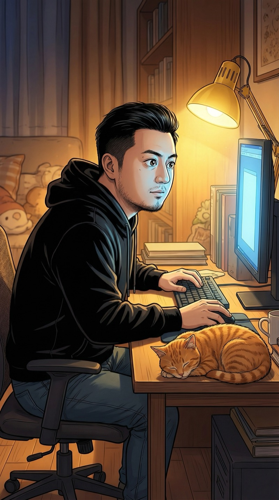
收件箱里多了一封没有发件人的邮件。加密方式——是部队用的。
退役三年，我以为这些东西再也不会找上门。
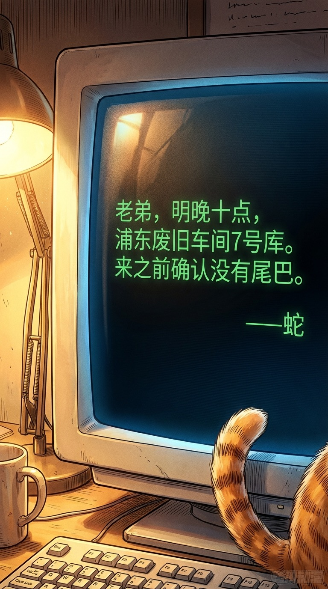
"蛇"。张思远。我当年小队里最疯的那个。三年没联系，突然冒出来……不会是好事。
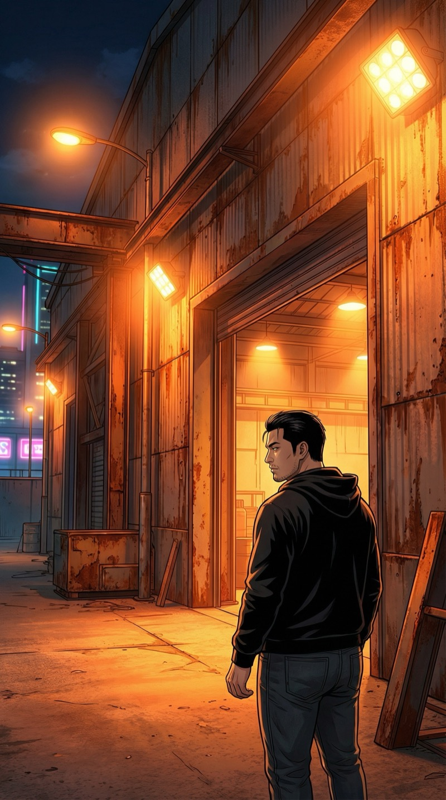
来之前我绕了三圈，换了两次出租车。确认没尾巴。
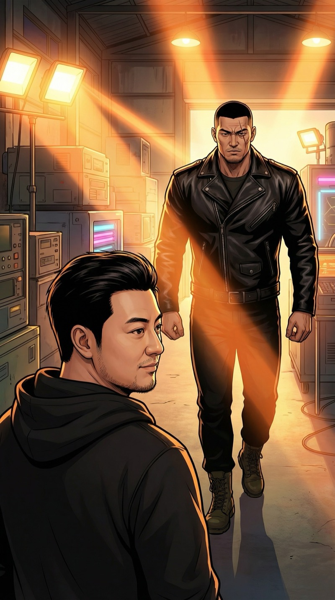
毒蛇："幽灵。三年不见，胖了。当老板的日子不错啊。"
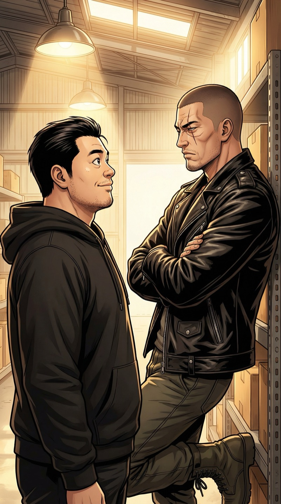
你用部队的加密发消息。要么是你被监控了想引我注意，要么是——你在体制内。
毒蛇（笑）："还是那么鬼精。后者。退役后进了华盾集团安保部。"
华盾。军工转民用的灰色地带巨头。赵鹏飞的背后。
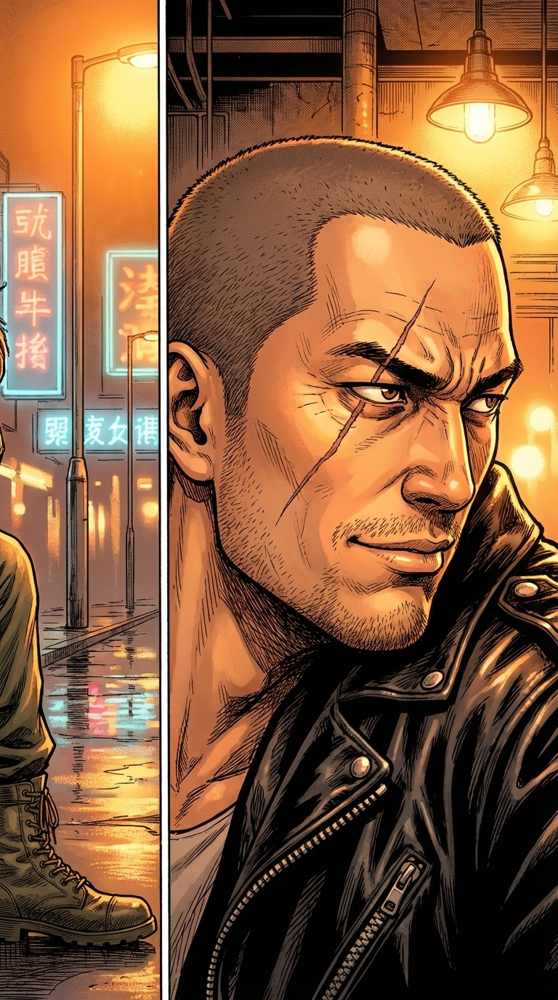
毒蛇："老弟，我不是来叙旧的。你的AI技术被盯上了。不是赵鹏飞那个级别——华盾高层直接关注。他们想收编你。"
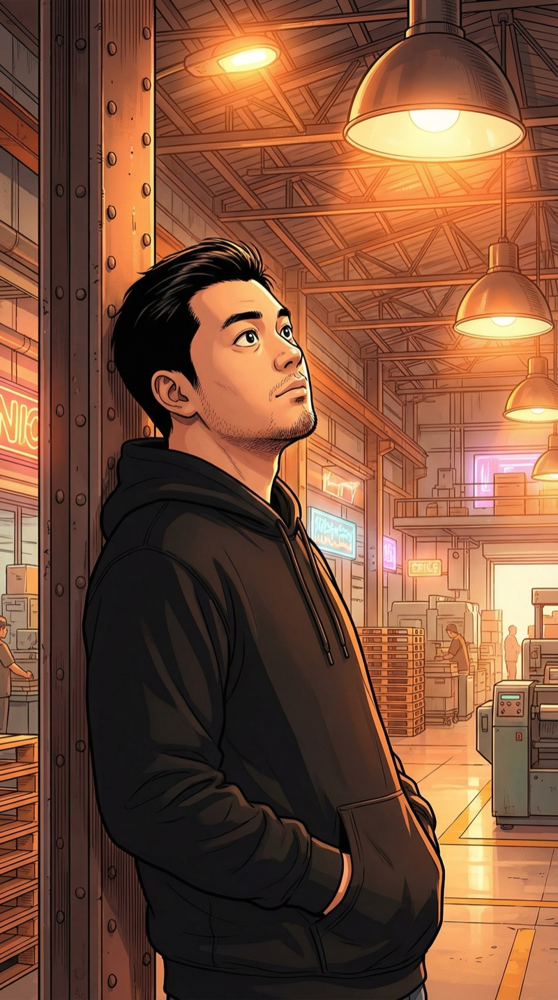
收编？不是打压？
毒蛇："打压赔本。收编赚钱。赵鹏飞路演上搞你那一出，不是要弄死你——是要先压你的估值，然后华盾低价控股。"
所以赵鹏飞只是棋子。路演上的一切，只是开胃菜。
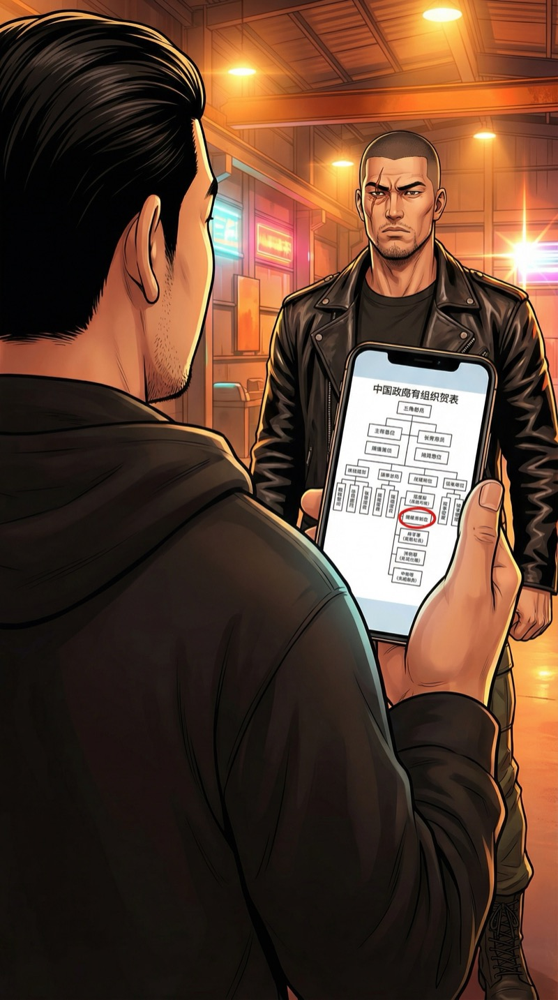
毒蛇："看到红色标记的那个人了？华盾的副总裁，孙维国。前军情处的。跟我们不是一个系统，但级别高。他才是在查你的人。"
毒蛇："对了老弟，你搞的那个AI，能帮我写周报不？我在华盾最烦的就是每周写安保报告。"
……在军工巨头当卧底还在想周报的事。这就是张思远——永远分不清什么时候该严肃。
B轮进入正式尽调阶段。三家投资机构，每家都要看技术底层。
但我们的核心模型里，有一个模块——不能被看到。
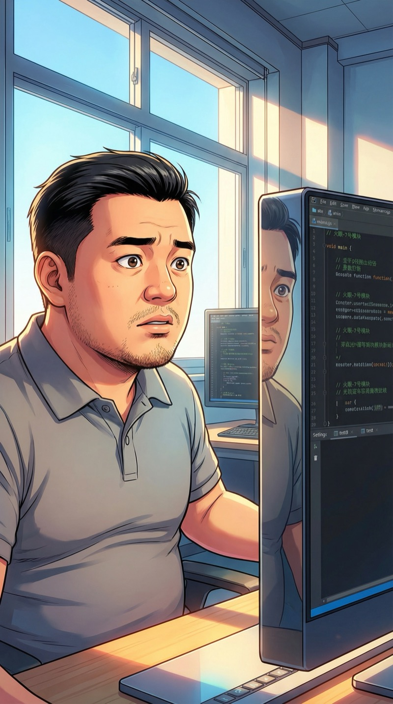
这个模块脱胎于我在军方时参与的计算机视觉课题。退役时部队允许我保留民用部分，但——这个边界很模糊。
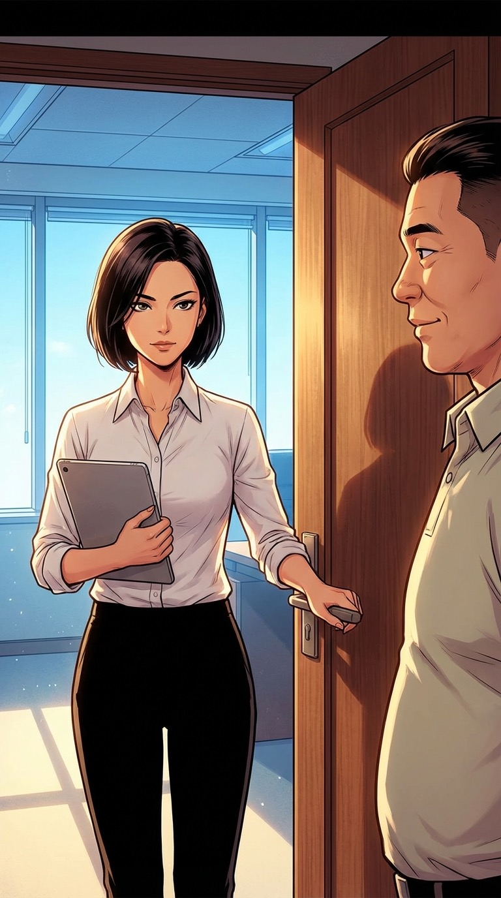
林婉清："朱总，尽调文档我整理到第三层了。但有个问题——你核心引擎里有个模块，没有任何开发日志。Git记录显示它是'初始提交'就存在的，没有开发过程。"
林婉清（抬头）："要么你在上线之前就写好了，要么……这段代码不是你写的。"
婉清，这个模块……是我之前的工作成果。合法的。但来源比较敏感，不方便在尽调中完全公开。
林婉清："'之前的工作'？你是说……部队里的？"
林婉清："朱总，你知道吗，你的代码要么是天才写的，要么是外星人写的。人类不会写出这种结构。"
她太聪明了。这就是我选她当CTO的原因——也是现在最麻烦的原因。
如果尽调团队深挖这个模块的来源，最好的情况：投资人看到军方背景觉得"哦，技术有底"。最坏的情况：军方出面说这是涉密技术，公司直接停摆。
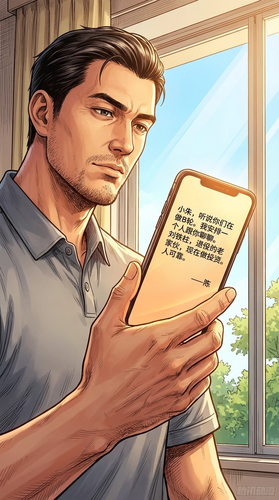
陈老总是在最关键的时候出现。这个"刘铁柱"……陈老推荐的人不会简单。
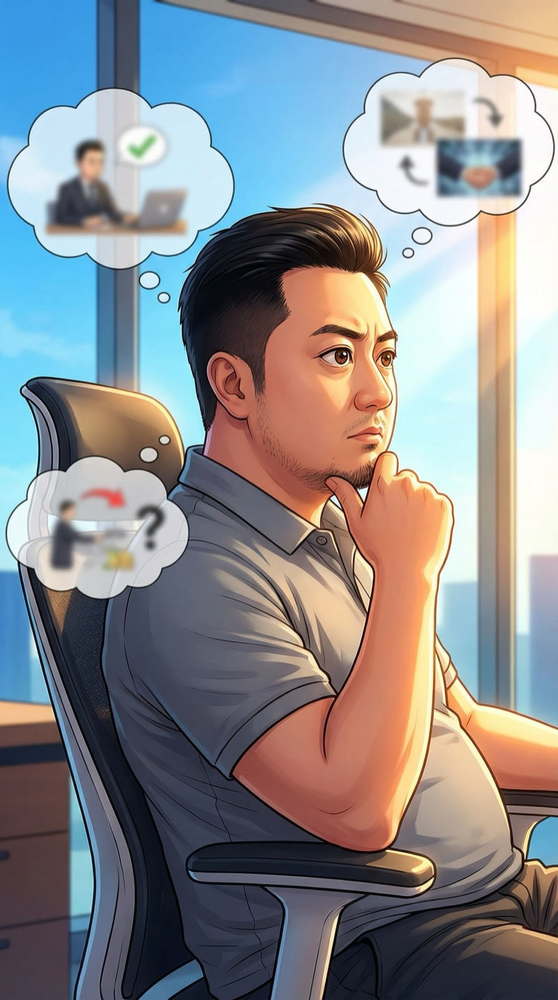
如何处理尽调中的军方代码？
A. 删除军方模块，用新方案重写
安全。但重写至少三个月。B轮的窗口期等不了。错过这一波，下一轮可能就是AI寒冬。
B. 坦白告诉投资人代码有军方背景，反而作为"军工级AI"卖点
大胆。但也许只有有军方背景的投资人才能理解。陈老推荐的那个刘铁柱……
C. 混淆代码来源，让尽调看不出问题
最快。三天搞定。但我从部队出来时对自己说过——不做假。一旦被发现，不只是信用破产，可能是牢灾。
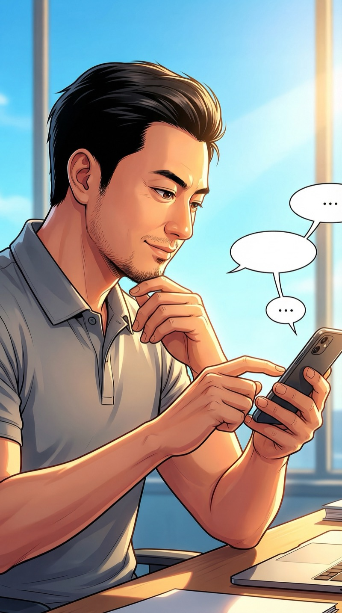
不做假是底线。用军方背景做卖点是攻势。但攻势需要精准——先让懂行的人看到价值，再对其他投资人讲故事。菩萨心肠，霹雳手段。
选择B：坦白+战略性利用。先通过刘铁柱验证军方背景的商业价值，再决定如何向其他投资人披露。
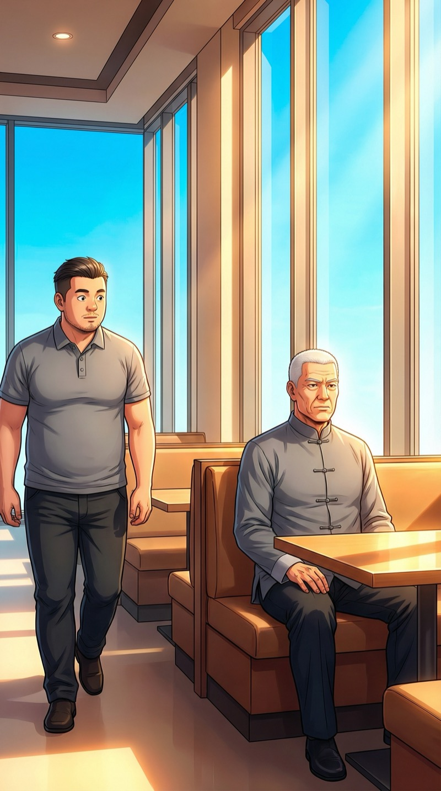
刘铁柱选了角落位置——背靠墙，面朝门。老军人的习惯。
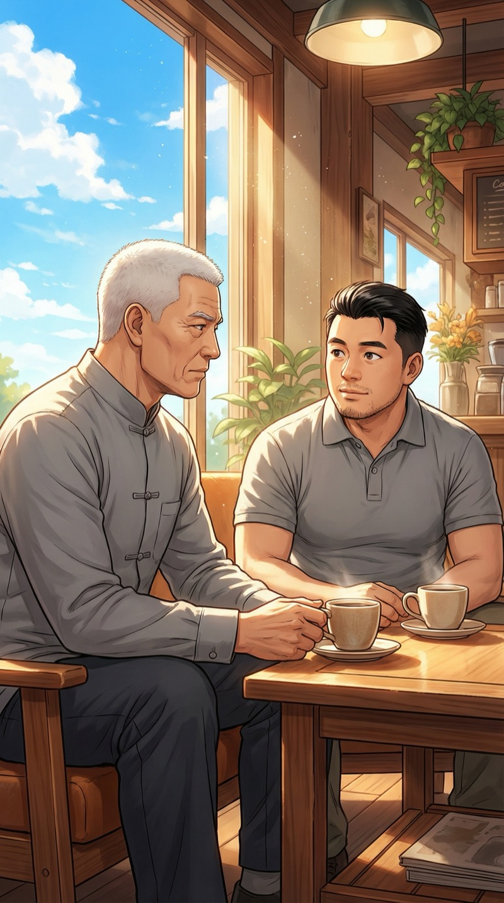
刘铁柱（声音低沉但温和）："陈老说你是'幽灵'小队出来的。我没查过具体——那些档案我没权限。但陈老推荐的人，我信。"
刘老，我直说。我们的AI核心模型里有一个模块来自军方课题。退役时有民用授权，但边界模糊。B轮尽调可能会挖出来。
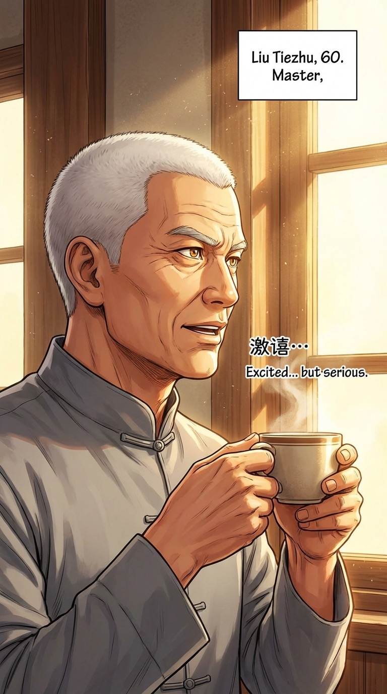
刘铁柱（放下咖啡杯，沉默良久）："小朱，你知道你那个模块如果完善了意味着什么吗？"
刘铁柱："这不是B轮多少钱的问题。这是国家级项目的级别。你的东西，在民用市场是领先三年。在军用方向——可能更多。"
他不是在吓我。他眼里有一种……兴奋。退役将领看到好装备时的那种兴奋。
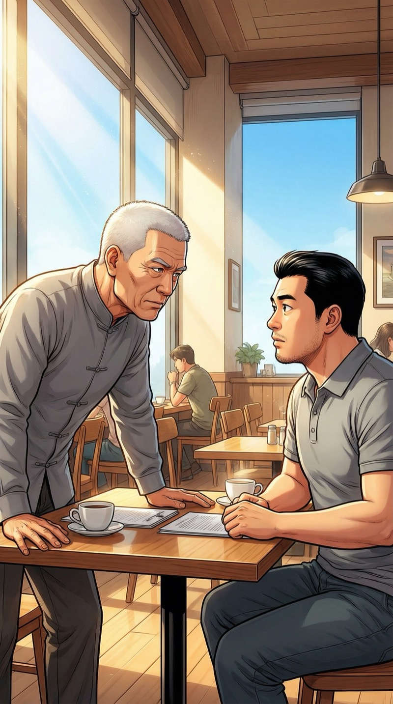
刘铁柱（身体前倾，气场骤变）："我可以领投你的B轮。不只是钱的问题——我的基金背后有几家国有资本，他们能帮你处理军方模块的合规问题。"
刘铁柱（眼神变锐利）："但有个条件——你必须见一个人。"
谁？
刘铁柱："你到时候就知道了。"
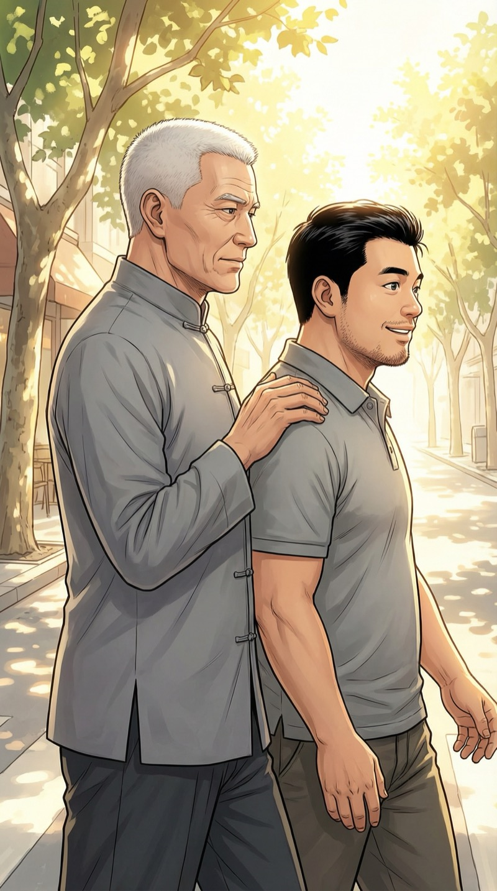
刘铁柱（突然冒出东北口音）："小朱啊，我退休前在部队管了三十年装备。能让我眼前一亮的技术不多。你这个——我老花眼都亮了。"
刘老，那您得保重眼睛，等我B轮完了请您做技术顾问。
B轮有了领投。军方模块的合规有了出路。但"必须见一个人"——这句话比赵鹏飞的任何阴招都让我不安。在部队里，"你到时候就知道了"通常意味着——接下来的事情你想拒绝也拒绝不了。
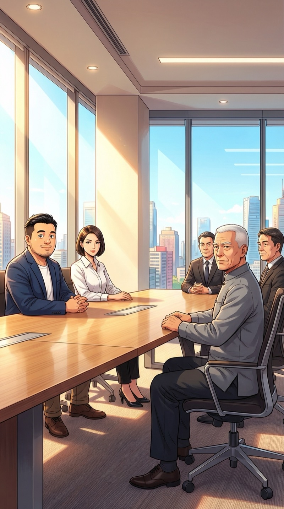
正式谈判。三方投资人都到了。
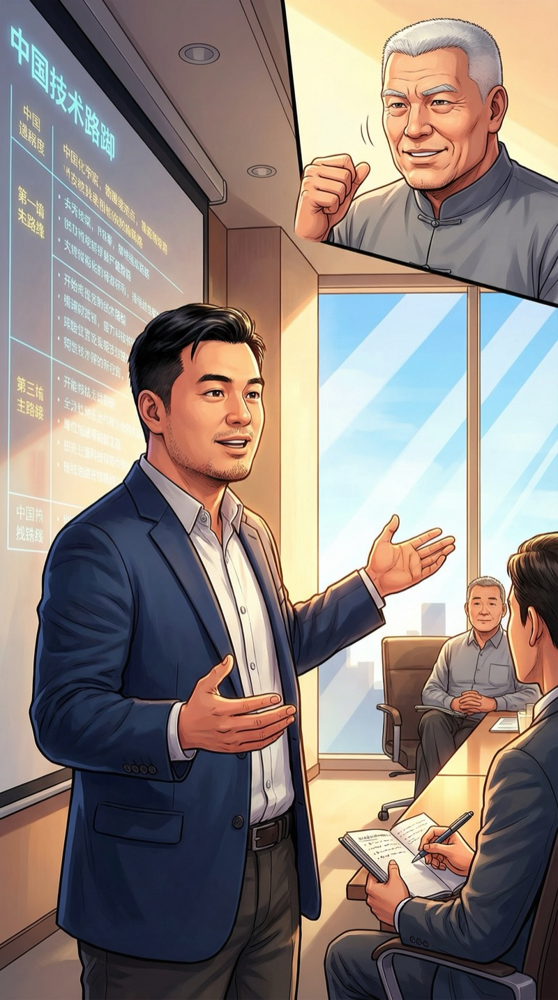
我们的核心优势不只是算法——是我们对计算机视觉底层架构的理解深度。这不是三五年能追上来的。
我没有说谎。只是没有说出这个"理解深度"的来源。
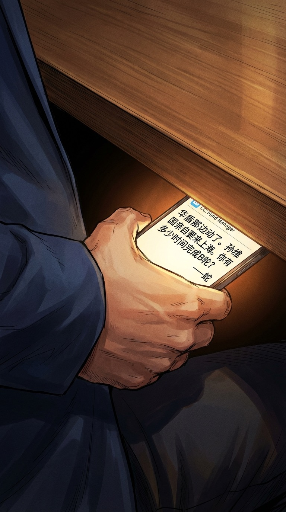
华盾那边动了。孙维国亲自要来上海……
同时，合同里一个基金经理抄送了赵鹏飞。
两线作战。商业上赵鹏飞还在暗搅，军事上孙维国要来了。这盘棋比我想象的大得多。
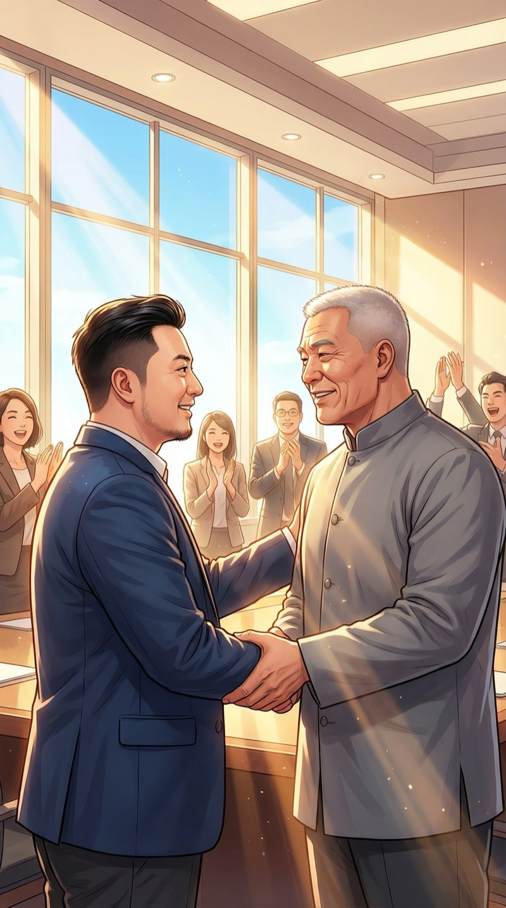
林婉清（小声）："恭喜，朱总。B轮3000万，估值翻了四倍。"
谢谢。但这只是开始。
钱到了。但最大的棋局才刚打开。
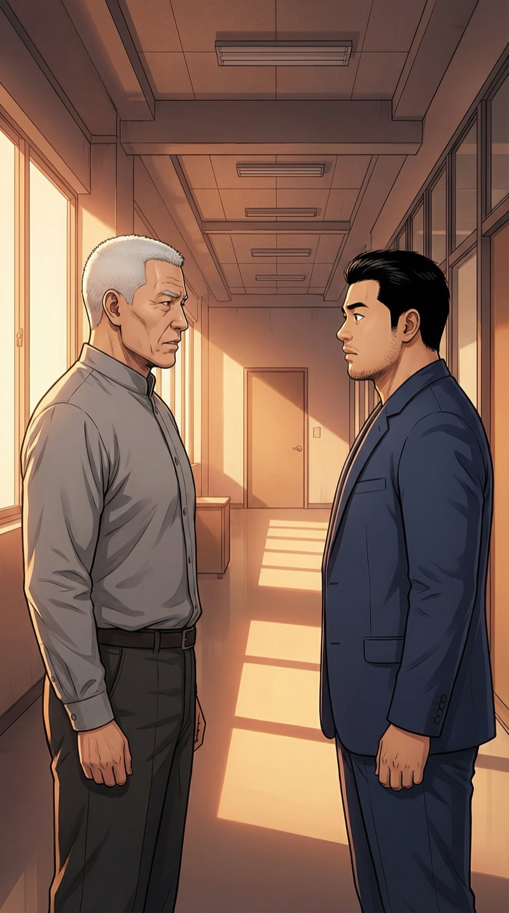
刘铁柱（低声）："小朱，那个人——下周见。我会安排。"
可以提前告诉我是谁吗？
刘铁柱（微微摇头）："你见到就知道了。但我提醒你——见面之后，你的人生可能会走上一条完全不同的路。"
每次有人对我说"你的人生会不同"的时候，都不是什么好事。上一次听到这句话，是入伍通知书。
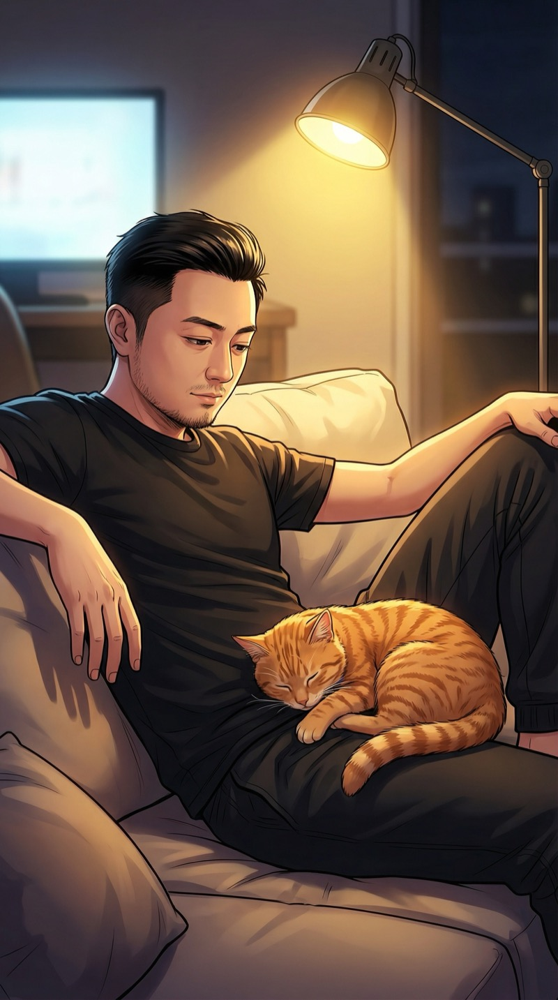
从小兵到老板，从老板到……被军工集团盯上的人。大橘，你说人生怎么越走越刺激？
大橘打了个哈欠。
你说得对。先睡觉。
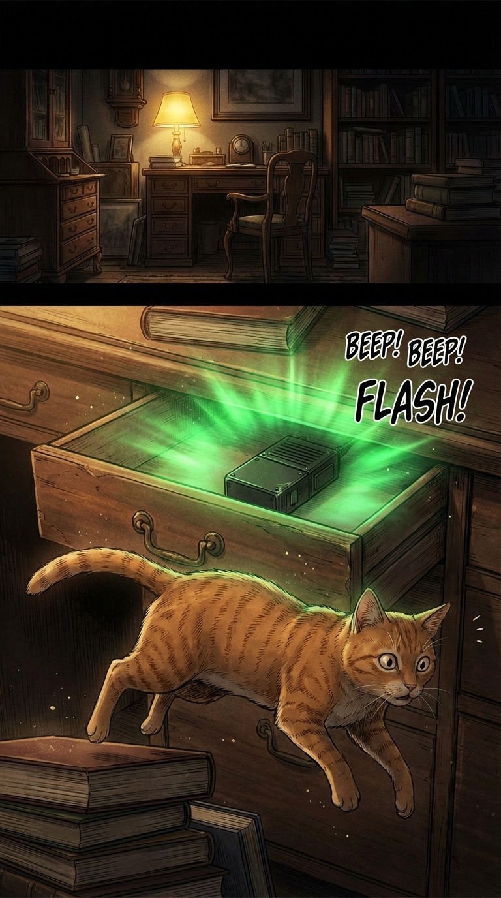
书桌抽屉深处——一个黑色小设备的屏幕亮了。军用通讯器。我以为退役时已经停用了。
亮绿色光在暗色房间里格外刺眼。大橘被吓得跳下沙发。
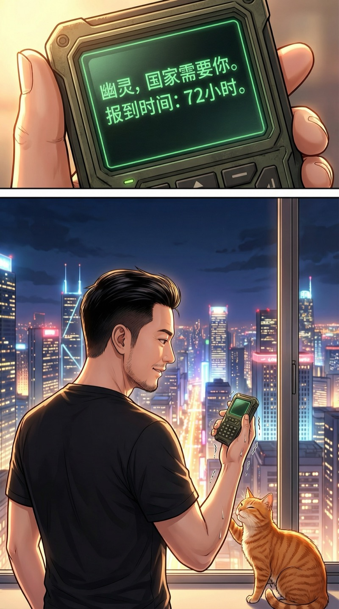
「幽灵，国家需要你。报到时间：72小时。」
三年了。我以为这个代号已经死了。但国家不会忘记它的幽灵。
72小时……B轮刚签完，孙维国要来上海，而国家召唤——时间线完全重合。这不是巧合。
有些人退役了，但幽灵永远不会退役。
第四章：72小时
国家的召唤、华盾的阴谋、赵鹏飞的暗手——
当三条线在72小时内交汇，幽灵将面临退役以来最大的抉择。
战神归来×AI创业 · V5 · EXP-587